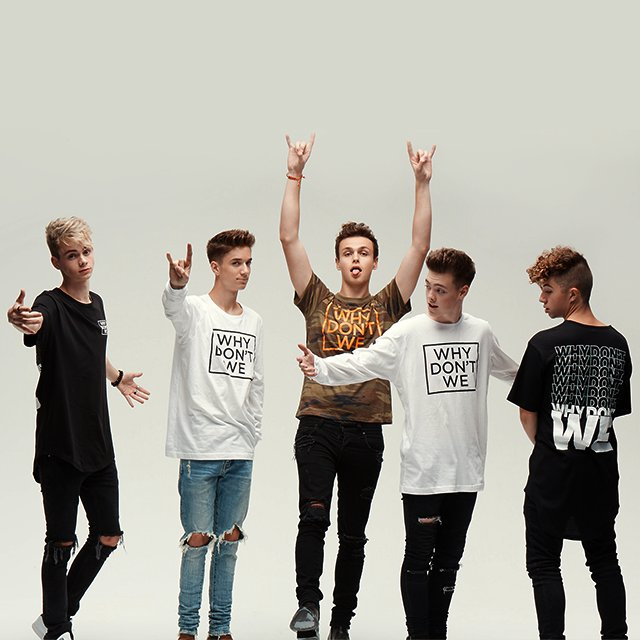

Why Don't We heeft ook merchandise, een kledinglijn met hun logo erop. Ze verkopen hun merchandise al meerdere jaren. Ze begonnen met verkopen van merchandise in het jaar 2017, toen de band al een tour achter de rug had. De reden dat ze niet vanaf het begin begonnen met merchandise verkopen had meerdere redenen. Hier een paar redenen waarom er in het begin nog geen merchandise was:
- Ze hadden in het begin nog geen omzet.
- Er was nog geen grote vraag ernaar.
- De focus lag meer op muziek maken en optreden doen.
Zodra de band meer fans had, begonnen ze met het maken en verkopen van merchandise. Naar mate de fandbase groeide, groeide de vraag naar merchandise. Op deze manier verdient Why Don't We, naast de verkoop van concertkaartje en de streams van hun liederen, hun geld mee.
Hieronder zie je een paar foto's van merchandise van Why Don't We.